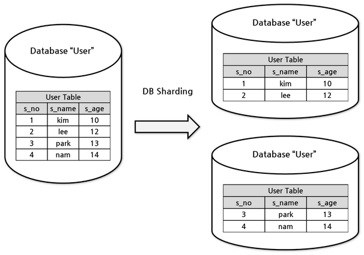

| OLAP과 OLTP 비교 | ||
|---|---|---|
| 구분 | OLAP | OLTP |
| 목적 | 트랜젝션 처리 | 데이터 분석과 보고서 작성, 대쉬보드 시각화 |
| 설계 | 앱 기능 지향 | 비즈니스 주제 지향 |
| 데이터 | 운영계, 실시간 최신 데이터 | 정보계, 통합/이력 데이터 |
| 크기 | 기가 바이트, 스냅샷 | 테라데이터, 아카이브 |
| SQL 쿼리 | 단순 트랜잭션, 빈번한 갱신 | 복잡한 집계 쿼리 |
| 사용자 | 아주 많음 | 분석가 포함 일부 |
| 출처: https://www.guru99.com/oltp-vs-olap.html | ||
3 기본 개념
데이터는 정형데이터(RDBMS), 비정형 데이터, 반정형 데이터로 크게 나눌 수 있다. 각 자료형에 따라 장단점이 있는 것은 명확하다. 정형데이터는 분석하기 용이한 반면 확장성과 유연성이 떨어지고, 비정형 데이터는 분석하기는 다소 어려움이 있으나 확장성과 용이성에서는 장점을 갖는다. .csv, .xml, .json 파일은 그 중간적인 특성을 갖는 반정형 데이터로 분류하기도 한다.

3.1 OLTP vs. OLAP
OLTP (OnLine Transaction Processing)는 데이터 자체 처리에 중점을 둔 개념인데 반해, OLAP (OnLine Analytical Processing)은 저장된 데이터를 분석하여 꿰뚤어 볼 수 있는 능력(Insight)를 도출하는데 중심을 두고 있다.
OLAP의 대표적인 예로 편의점 판매시점 정보관리(Point-Of-Sales, POS) 기계를 들어보자. 편의점에서 물건을 구매한 경우 다음과 같은 거래가 발생된다.
- 고객 카드에서 현금 10,000원 인출
- 편의점 통장에 10,000 지급
- 명세표 출력
상기 3건의 작업 프로세스가 하나의 트랜잭션(transaction) 묶어 모두 성공적으로 처리가 되어야 편의점 물건구매가 완료되도록 개발한다.
반면에 OLAP은 데이터를 체계적으로 저장하여 데이터에 기반한 의사결정지원을 할 수 있도록 주안점을 두고 있다.
따라서, OLTP는 운영 데이터베이스(Operational Database)로 적합하여 쓰기 업무(Write-intensive)가 많은 경우 빠르고 안전하게 레코드를 삽입(insert)하는데 특화된 반면, OLAP은 데이터 창고(Data Warehouse) 업무에 적합한데 다양한 분석업무를 수행할 때 쿼리 작업을 속도감있게 진행할 수 있어 읽기 업무(Read-intensive)에 특화되어 있다.
3.2 DW, 데이터 호수
전통적인 데이터베이스(Database)는 관계형 데이터베이스를 통해서 실시간 정형데이터를 빠르고 신뢰성있게 처리하는데 운영계를 지탱하는 주된 쓰임새가 있으며, 데이터 창고(Data Warehouse)는 이력 데이터를 통합하여 꿰뚤어 볼 수 있는 능력(Insight)을 제공함은 물론 보고서와 전체적인 현황을 대쉬보드를 통해 제공하는데 큰 의미가 있다. 데이터 호수(Data Lake)는 정형, 반정형, 비정형 데이터를 모두 저장하고 관리한다는 측면에서 유연성과 확장성을 내재하고 있으며 빅데이터를 분석하여 OLAP에서 추구하는 바를 한단계 더 넓혔다는 점에서 의의를 둘 수 있다. 1

데이터 호수(Data Lake)는 특정한 구조가 없기 때문에 접근하기 용이하고 쉽게 수정하기도 용이한 반면, 데이터 창고(Data Warehouse)는 상대적으로 유연성이 떨어진다. 데이터 과학자는 아직 결정되지 않는 비즈니스 활용 사례를 데이터 문제로 바꿔 모형을 만들고 시각화를 하는데 데이터 호수가 적합한 데 반해, 비즈니스 현업전문가는 일단 전처리가 완료된 데이터를 데이터 창고에 쌓아 두고 특정 목적에 즉시 활용된다는 점에서 비교가 된다.
| 데이터 호수와 창고(DW) 비교 | ||
|---|---|---|
| 구분 | 데이터 호수 | 데이터 창고 |
| 자료구조 | 원천 데이터 (Raw Data) | 전처리 된 데이터 |
| 데이터 활용 목적 | 미결정 상태 | 현재 사용 중 |
| 사용자 | 데이터 과학자 | 비즈니스 현업전문가 |
| 접근성 | 접근성 높고 신속한 업데이트 | 변경하기 쉽지 않고 비용도 많이 소요됨. |
| 출처: https://www.qlik.com/us/data-lake/data-lake-vs-data-warehouse | ||
유명한 클라우드 서비스 제공 업체들은 데이터 창고와 데이터 호수 데이터 관리 기능을 제공한다.
먼저, 데이터 창고 서비스로 다음과 같은 것들이 있다.
- AWS: 아마존 Redshift는 대규모 데이터 집합을 효과적으로 분석할 수 있는 관리형 데이터 웨어하우스 서비스.
- MS Azure: Azure SQL Data Warehouse는 높은 성능과 확장 가능한 클라우드 데이터 웨어하우스로, SQL과 NoSQL 모두 지원.
- 구글: 구글 빅쿼리(BigQuery)는 서버리스(serverless) 및 완전관리형 데이터 창고 서비스로 대용량 데이터에 대한 빠른 SQL 질의 기능을 제공.
데이터 호수 서비스는 다음과 같은 것들이 있다.
- AWS: AWS S3 (Simple Storage Service)는 높은 내구성을 가진 객체 저장소 서비스로, 데이터 호수 구축에 널리 사용.
- MS Azure: Blob Storage는 대용량 비구조화 데이터를 저장하기 위한 서비스, Azure Data Lake Storage는 빅데이터 분석에 최적화된 저장소를 제공.
- 구글: Cloud Storage는 구글 클라우드의 객체 저장소로, 데이터 호수 구축에 적합.
- 네이버: Object Storage는 네이버 클라우드 플랫폼의 객체 저장소로, 대규모 데이터를 저장하고 관리하기 위한 서비스.
3.3 ETL과 ELT 2
ETL은 추출, 변환, 적재(Extract, Transform, Load)의 약자로 동일 기종 혹은 이기종의 원천데이터로부터 데이터 웨어하우스에서 쌓는 과정을 뜻하는데 변환(Transform) 과정이 무척 많은 노력이 투여된다. 반면에 ELT는 데이터를 먼저 적재한 후에 필요에 따라 변환과정을 거쳐 후속 작업에 사용한다. 데이터 호수 ELT 프로세스가 매력적으로 보이지만 데이터 카탈로그가 잘 관리되지 않는다면 데이터 늪(Data Swamp)가 될 수 있다.

데이터 호수를 잘 관리하지 않는다면 데이터 늪에 빠질 수 있는데 메타데이터를 잘 관리하고 거버넌스를 확립해야 되고 비정형데이터도 많이 다루기 때문에 데이터 전문가 과학자를 확보하여 효율성을 높인다.
3.4 데이터 통합
원천데이터가 서로 다른 형태로 다양하게 존재하는 상황에서 데이터를 통합한다는 것은 시스템을 맞추는 것을 넘어 개념적인 데이터 모델로 정립하여야 하고 관련하여 파생된 다양한 문제를 조화롭게 해결하는 것으로 정의할 수 있다.
데이터를 한 곳에 모을 때 먼저 수집할 데이터 종류를 정의한다. 클라우드 서비스를 사용하는 경우, 예를 들어 AWS의 Redshift나 S3 같은 서비스를 고려하고, 수집된 데이터 중 개인정보가 있다면, 이를 사전에 식별하고 마스킹이나 다른 방법으로 익명화한다.
데이터 혈통(Data Lineage) 구축은 데이터 출처, 경로, 변환 과정을 추적하고 기록하는 것으로 데이터의 투명성과 가시성을 확보하는 데 중요하다. 데이터 혈통을 통해 데이터의 원천과 변화 과정을 명확히 이해하고, 문제가 발생했을 때 그 원인을 쉽게 파악할 수 있다. 결국, 데이터 통합은 데이터 출처와 흐름을 파악하고, 이를 통해 데이터의 신뢰성을 확보하는 것이 핵심이다.

3.5 테이블 분할과 샤딩
빅데이터 시대에 데이터가 계속 커지면서, 테이블 용량 한계에 도달하는 상황이 빈번하게 발생한다. 이러한 문제에 대응하기 위해, 데이터베이스 설계에서 분할(Partitioning)과 샤딩(Sharding)이라는 개념이 중요해졌다. 테이블 크기가 예를 들어 100GB나 1TB에 이르게 되면, 인덱스 크기도 커져서 메모리에 적재하는 것이 어려워지고, 쿼리와 업데이트 속도 저하로 이어진다.
이런 경우, 테이블을 더 작은 단위로 나누는 방식이 필요한데 이를 분할(Partitioning)이라 부르며, 크게 수평 분할(Horizontal Partitioning)과 수직 분할(Vertical Partitioning) 두 가지 방식이 있다. 수평 분할은 테이블 행을 기준으로 나누는 것이고, 수직 분할은 열을 기준으로 나눈다.
샤딩(Sharding)은 분할의 한 형태로, 데이터를 여러 데이터베이스 서버에 분산시키는 것을 의미한다. 샤딩은 데이터베이스의 부하를 분산시키고 확장성을 향상시키는 데 유용하다. 각 샤드는 독립적으로 운영되며, 서로 다른 노드에서 처리될 수 있다.
테이블을 분할하거나 샤딩할 때, 개념적 및 논리적 데이터 모형은 동일하게 유지되지만, 물리적 데이터 모형은 이러한 변경에 영향을 받는다.
- 개념 데이터 모형(Concept Data Model): 엔티티, 관계, 속성 등을 포함하며 ERD(Entity Relational Diagram)나 UML 다이어그램으로 표현된다.
- 논리 데이터 모형(Logical Data Model): 테이블, 칼럼, 관계 등으로 구성되며 데이터베이스 스키마와 모델로 표현되고, 분할이나 샤딩의 영향을 받을 수 있다.
- 물리 데이터 모형(Physical Data Model): 물리적 저장 장치에 초점을 맞춘다. 백업 시스템, 파티션, CPU, 저장 공간 등이 포함되고 분할과 샤딩이 중요한 역할을 한다.

데이터베이스 샤딩(Database Sharding)은 테이블을 여러 개의 데이터베이스에 분산시키는 방식으로, 테이블들이 서로 다른 물리적 기계(서버)에 위치한다는 특징을 가진다. 이를 통해 데이터베이스 부하를 분산시키고, 시스템 확장성과 성능을 향상시키는 데 중요한 역할을 한다.
데이터베이스 샤딩은 특히 대규모 온라인 트랜잭션 처리(OLTP) 시스템, 대용량 데이터를 다루는 웹 애플리케이션, 실시간 데이터 처리가 필요한 시스템 등에서 유용하다. 각 샤드가 독립적으로 운영되기 때문에 시스템의 전체적인 안정성과 가용성이 향상된다.3

3.6 데이터베이스 설계
데이터베이스 설계(Database Design)는 데이터를 논리적으로 저장하는 방식으로 데이터베이스 모델(Database Model)을 사용한다. 데이터베이스 모델(Database Model)은 데이터베이스 구조에 대한 최상위 사양서의 역할을 한다. 일반적으로 관계형 데이터베이스 모형(Relational Database Model)을 사용하지만 NoSQL, 객체지향 DB 모형, 네트워크 DB 모델 등이 있다. 데이터베이스의 청사진으로 스키마를 사용해서 테이블, 필드, 관계, 인덱스, 뷰로 구성하여 작성한다.
- 데이터 (Data) ← 논리 모형
- 데이터베이스 모형 ← 데이터 구조에 대한 사양서
- 스키마 ← 레고 블럭(Table, Field, Relation, Index, View 등)으로 데이터베이스 설계
즉, 데이터를 체계적으로 구조화하는 논리모형을 먼저 구상하고 나서 사양서를 작성하고 실제 데이터베이스 설계로 들어간다.
3.6.1 데이터 모형(Data Modeling)
데이터를 저장하는 방식을 설계할 때, 데이터 모형(Data Model)을 만드는 단계는 중요하다. 데이터 구조와 관계를 명확히 하고, 효율적인 데이터 관리 및 활용을 위한 기반이 마련된다. 데이터 모형 제작 단계를 다음과 같이 3단계로 나눌 수 있다.
-
개념 데이터 모형(Conceptual Data Model):
- 엔티티(Entity), 관계(Relationship), 속성(Attributes)을 통해 데이터와 관계를 높은 수준에서 추상화한다.
- ERD(Entity Relational Diagram)나 UML(Unified Modeling Language) 다이어그램을 사용하여 시각화한다.
-
논리 데이터 모형(Logical Data Model):
- 논리 데이터 모형은 개념 모형을 데이터베이스 설계로 변환하는 중요한 역할을 담당하며 데이터베이스 스키마와 모형을 사용하여 테이블, 칼럼, 관계와 같은 구체적인 구조를 정의한다.
- 관계형 모형, 스타 스키마(Star Schema)와 같은 다양한 데이터베이스 구조가 이 단계에서 고려된다.
-
물리 데이터 모형(Physical Data Model):
- 데이터를 백업 시스템, 파티션, CPU, 저장 공간, 저장장치와 구성요소들을 고려하여 물리적인 저장방식을 결정한다.
- 물리 데이터 모형은 실제 데이터베이스 시스템의 성능, 저장 방식, 접근 통제방법 등도 고려한다.
3.6.2 데이터 정규화
관계형 데이터베이스 설계에서 정규화(Normalization)는 데이터 중복을 최소화하여 구조를 최적화하는 과정을 의미한다. 에드거 F. 커드는 정규화의 기본 개념을 1970년에 제1정규형(1NF)으로 소개했으며, 이후 1971년에 제2정규형(2NF)과 제3정규형(3NF)을 정의했다. 1974년에는 레이먼드 F. 보이스와 함께 보이스-코드 정규화(BCNF)를 정의했다. 일반적으로 관계형 데이터베이스 테이블이 제3정규형(3NF)에 도달했을 때, 그 테이블은 정규화되었다고 간주한다. 4 5
-
제 1 정규형 (1NF):
- 각 레코드는 고유(유일무이, unique)해야 한다. 즉, 중복이 없어야 한다.
- 각 셀은 오직 하나의 값만을 가져야 한다.
-
제 2 정규형 (2NF):
- 제 1 정규형을 만족해야 한다.
- 기본키가 한 칼럼인 경우 자동으로 제 2 정규형을 만족한다.
- 기본키가 아닌 모든 속성은 기본키에 완전 함수 종속되어야 한다.
-
제 3 정규형 (3NF):
- 제 2 정규형을 만족해야 한다.
- 기본키가 아닌 모든 속성은 기본키에 이행적 함수 종속이 되지 않아야 한다.
- 예를 들어, X, Y, Z가 있을 때 X → Y이고 Y → Z인 경우 X → Z가 성립한다면, Z는 X에 이행적으로 함수 종속된 것으로 간주한다.
정규화는 데이터의 무결성을 유지하고 쿼리 성능을 향상시키는 데 도움을 준다. 하지만, 너무 많은 정규화는 쿼리 복잡성을 증가시키고 성능 저하를 일으킬 수 있어, 적절한 수준에서 정규화를 적용하는 것이 중요하다.
연습문제
객관식
-
문제: OLTP와 OLAP의 주된 차이점은 무엇입니까?
- 데이터 처리 속도
- 사용되는 프로그래밍 언어
- 처리되는 데이터의 종류
- 데이터 처리와 분석에의 초점
-
문제: 데이터 호수(Data Lake)의 특징은 무엇입니까?
- 오직 정형 데이터만을 저장
- 정형, 반정형, 비정형 데이터 모두 저장
- 데이터 처리보다는 보관에 초점
- 데이터 분석이 불가능
-
문제: 데이터베이스 정규화의 주요 목적은 무엇입니까?
- 데이터 처리 속도 향상
- 데이터 중복 최소화 및 구조 최적화
- 보안 강화
- 저장 공간 최소화
서술형
- 문제: 데이터 창고(Data Warehouse)와 데이터 호수(Data Lake)의 주요 차이점에 대해 설명하시오.
- 문제: ETL과 ELT 프로세스의 차이점과 각각의 장단점에 대해 설명하시오.